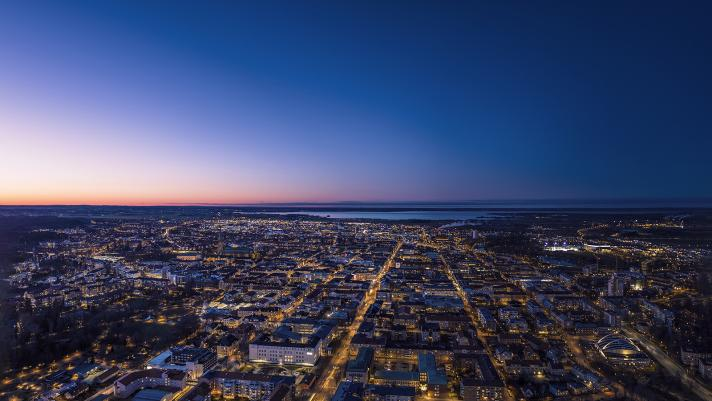
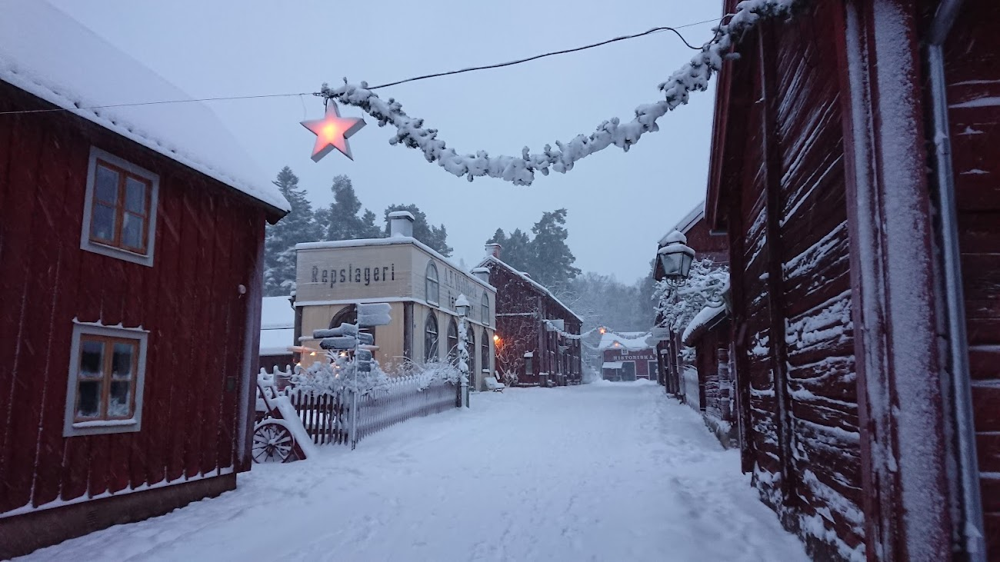

Linköping — local information
Venue
-
Location:
Linköping University, Campus Valla, C-building, room C3
Link to map -
Getting there:
From Linköping Central Station, take either
- local bus 4 towards Ryd or Mjärdevi and get off at Nobeltorget at the south side of campus, 10 min walk north to the venue.
- regional bus 540 towards Kisa station and get off at Universitetet Linköping, and walk 5 min east to the venue. Nobeltorget at the south side of campus, 10 min walk north to the venue.
- Busses 3, 6, 12, 14 also work but may involve longer walking distance.
Schedule for busses are found on https://www.ostgotatrafiken.se/ or use the mobile app called "Östgötatrafiken". - Access: There is some ongoing construction on campus. Enter the C-building from the campus side (south-west), the room C3 is just inside. The outer doors are locked over the weekend; please contact the organizers if you need any help.
Airport transit
- Between Linköping centre and Stockholm Arlanda airport (ARN): 2-3 hours by train, tickets: SJ.se, the airport is called "Arlanda flygplats" in swedish.
- Between Linköping centre and Linköping city airport (LPI): 5-10 min by taxi or Uber, no good bus connections. This airport only connects to Amsterdam and can not be used for going to Luleå.
Practical notes
- Temperature: expect -5°C in the day. Dress accordingly, we will walk ~10 minutes to the Lunch restaurant.
- Daylight: About 8 hours 8:00 to 16:15.
- Money: International credit cards such as Visa/Mastercard are accepted everywhere.
Pictures

Linköping university campus

Aerial view of Linköping

Gamla Linköping - open air museum close to campus